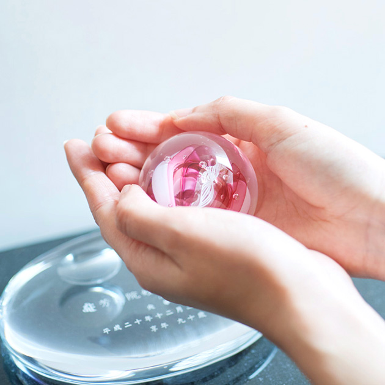
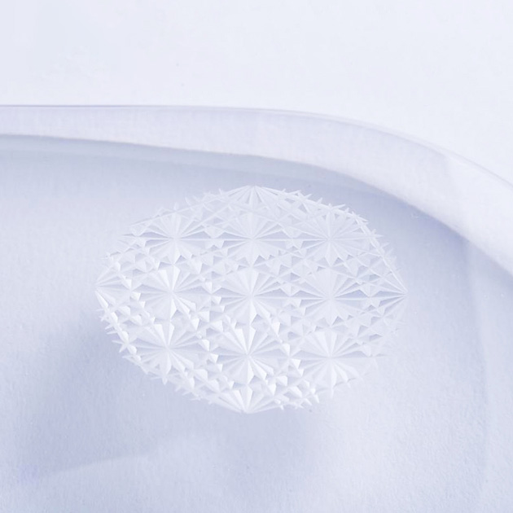
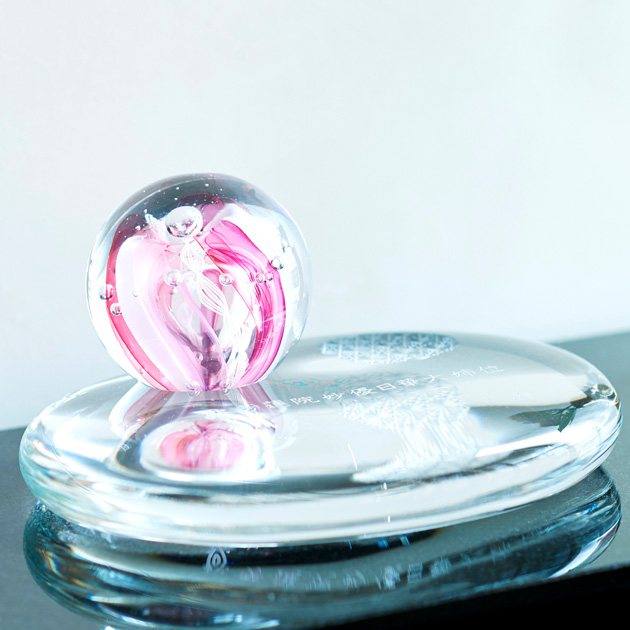
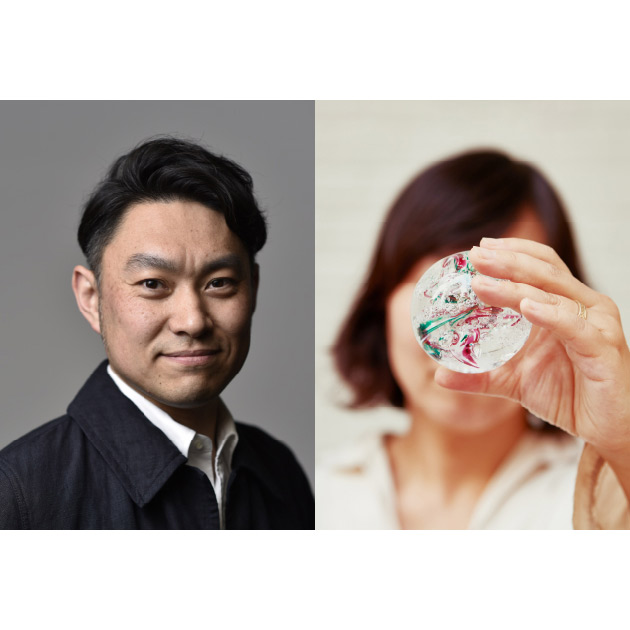
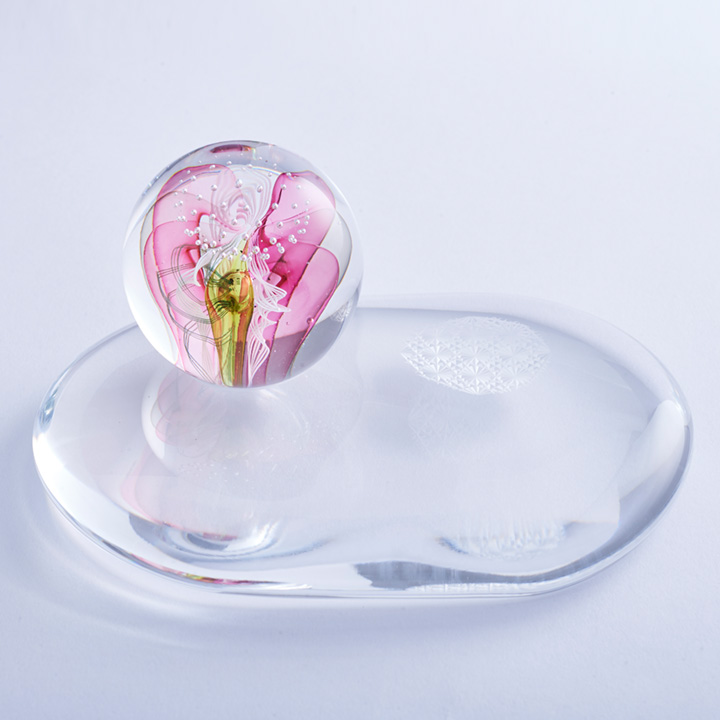

Do
間、個人化への導線
暮らしに間を置く道具を知り、買える場所へ行く。
商品説明
現代供養の新しいかたち
見る角度によりさまざまな表情を見せる球体と、草花に降りる露のようなやさしい形の台座のガラス製の供養具。
『ひかり』は、大切な方をあたたかくも儚い“光”として感じて頂きたいという気持ちから生まれました。ガラスや切子模様は光を浴びて、それ自身が優しい輝きを放ちます。時の流れとともに変化するガラスの表情が見つめるうちに悲しみを安らぎへと変え、故人を偲ぶひとときをやがて明るいものへと変えていくことでしょう。

想う心とお祀りする神聖さ
個性的な二つのパーツが一体化して見えるよう、球の配置や台座の高さなど細部までこだわりました。吹きガラスの自然な形が故人を想う心を、切子文様が大切な方をお祀りする神聖さを表現します。掌のカーブを使って象られた球は、両手に優しく包みこむと、どこかで大切な方を感じることもでき、置き方や差し込む光など、使う方それぞれの要素が加わることで『ひかり』の姿は完成します。

身近なガラスという
素材に想いを乗せて
誰しもの身近にありつつ、儚い存在でもあるガラスを使うことにこだわって生まれました。息を吹き込んで形作る“吹きガラス”の技法を用いることで、水のようなやわらかさ、清涼感を持たせています。手作りの複雑な模様をおりなす球は一つひとつ異なり、台座の切子デザインは、「家族の繁栄」を意味する麻の葉文、「幸せを籠む（詰める）」を意味する籠目文、「喜びをつなぐ」を意味する菊繋文の三文様からお選びいただけます。

一流の職人技術が織りなす繊細さ
『ひかり』は株式会社堀口切子の堀口徹氏プロデュースの元、複数の職人の手を渡りながら、一つひとつ手作業で丁寧に作られています。台座に添えられた江戸切子だけでも6つの工程を必要とします。美しい模様を出すには均一なカット技術が必要で、限られた職人にしか作ることができません。球体はガラス作家のヨコタユウコ氏が掌のカーブを使って球形を作っています。一流の職人の技術が結集した『ひかり』は、オブジェとしても印象的です。

光を、かたちにする人たち
【堀口切子 三代秀石 堀口 徹】
1976年、東京都生まれ。
二代目秀石に江戸切子を師事し、三代秀石を継承、堀口切子を創業しました。
日本の伝統工芸士（江戸切子）に認定され、ニューヨーク、パリ、ロンドンなど、海外でも作品を発表。
飲料ボトルのデザイン監修や、ホテルの照明・パッケージまで、伝統の枠を超えて活動しています。
グッドデザイン賞、江戸切子新作展最優秀賞など、受賞多数。
【ヨコタ ユウコ】
パティシエを経て、ガラスの世界へ。
工房に通いながら技術を身につけ、2001年から個展を開催しています。
作品は、NHKフランス語講座のオープニングに使われ、
店舗の建築素材として用いられた建築は、美観大賞を受賞しました。

商品仕様
サイズ
幅16cm×奥行11cm×高さ7cm(最大サイズ)
玉:直径5.8cm～直径6.2cm
台座:幅16cm×奥行11cm×高さ3cm(最大サイズ)
仕上げ
吹きガラス、江戸切子
素材
ガラス
生産地
東京都江戸川区
デザイナー
堀口 徹＋ヨコタユウコ